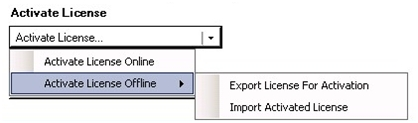

Installing the VMS License
If you use a Siveillance VMS, complete the following procedure to install the license within 30 days from the configuration (or modification) of video cameras. After 30 days, you want be able to work with the video cameras without a valid license.
NOTE: For the license for a Milestone VMS, refer to the Milestone documentation or contact the Milestone support.
- On the VMS Management client, in Activate License, select:
Activate License Offline > Export the VMS license for activation. - You get an xyz.Irq file.
- Save or export the file, and send it per email to the Siveillance support.
Include your name, Desigo CC Customer ID and the project details so that it can be properly mapped internally. - You receive an xyz.lic file (the VMS license file).
- Copy the file on the VMS Management client computer, or onto a USB memory stick.
- On the VMS Management client, in Activate License, select:
Activate License Offline > Import Activated License and select the VMS license file. - The VMS License is installed.

NOTE: To avoid multiple requests, try to complete the video camera configuration in a few days, and issue the license request for the final (and stable) configuration.